Inspetor Jirafalis
Documento de apresentação do produto · novembro de 2026
Gestão de times de desenvolvimento que trabalham com IA, em qualquer escala, com dados em que o gestor pode confiar e regras que conquistam autonomia.
O Jirafalis é um inspetor. Ele lê a ferramenta de gestão e o git, mostra onde cada item está de verdade, separa falha do processo de atraso da pessoa, e transforma o que se repete em regras. As regras começam propondo, passam a fazer e contar o que fizeram, e chegam a agir sozinhas, sempre vigiadas por um cérebro que mede cada ação.
Ver a mesa do dia ▸InvestigarOnboarding pela IARegras e cérebro1O problema
A IA mudou o trabalho dos times de desenvolvimento. A gestão não acompanhou.
As ferramentas atuais medem métricas ou automatizam dentro de uma plataforma. Nenhuma aprende o processo da empresa, corrige o registro com segurança, mede a própria confiança e conquista autonomia aos poucos.
2O que o Jirafalis faz
Seis capacidades, uma em cima da outra.
3A jornada do gestor
O gestor não aprende uma tela nova para começar: conversa com a IA que já usa. Depois, o dia a dia acontece na mesa do dia, onde tudo fica registrado e controlado. A conversa cria, o painel registra e controla.
4A mesa do dia: o coração do Jirafalis
A página principal é onde o gestor trabalha todo dia com as regras e onde a confiança delas é construída. É a tela do núcleo em uso real hoje, com o que o discovery acrescentou: nível sênior, tarja vermelha, motivo opcional ao suspender e ligação com o Investigar.
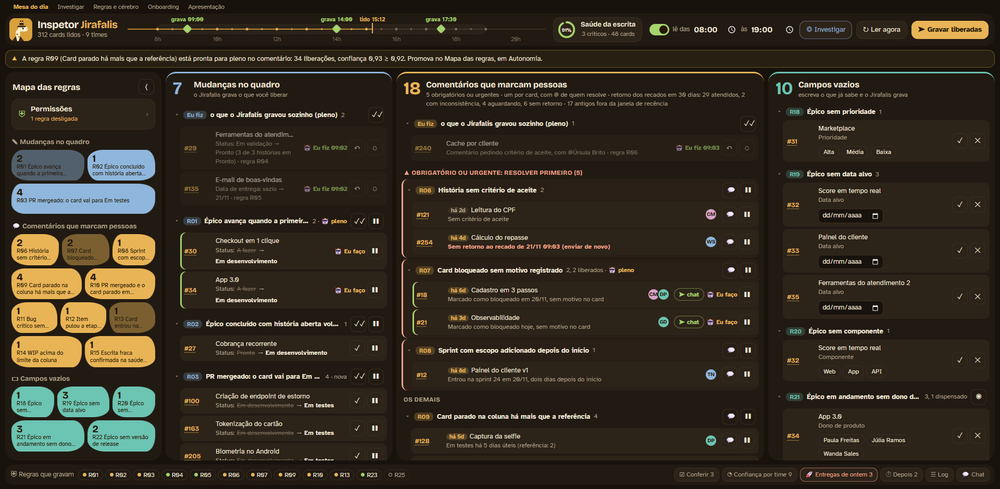
Tela · Mesa do diaClique em tudo: liberar, suspender (com motivo opcional), preencher campos, os pontos da linha do tempo, a saúde da escrita, as manchas do mapa, Promover a pleno, as janelas do rodapé e o número de um card para abrir o caso no Investigar.O topo
| Peça | O que faz |
|---|---|
| Marca | Abre e fecha o Mapa das regras (tecla M); mostra quantos cards foram lidos |
| Ronda do dia | Linha do tempo: faixa do horário de leitura, um ponto a cada 30 minutos, "lido 15:12" e os losangos de gravação. Clicar na linha cria um ponto de gravação (até 6); clicar no losango tira. Tudo com confirmação |
| Saúde da escrita | % da qualidade do que está escrito nos campos. Abre os achados por card (crítico, urgente, atenção) com o porquê e os botões Aceitar (vira experiência e comentário R15) e Ignorar. Aprende valores conhecidos ("é cliente: guardar") |
| Agenda | Chave da gravação sozinha e o horário em que o Jirafalis lê a ferramenta |
| Investigar | Abre a visão geral de todos os times (seção 8) |
| Ler agora · Gravar liberadas | Lê na hora; grava agora o que foi liberado, mostrando a lista antes. Se a lista mudar com a caixa aberta, não grava |
As três raias
| Raia | O que mostra | Como o gestor age |
|---|---|---|
| Mudanças no quadro | Status e campos que as regras querem gravar: card, campo, de → para, o motivo no balão | Liberar ou Suspender, por item ou o grupo inteiro. Regra pleno mostra Eu faço (só dá para suspender). No topo, o grupo Eu fiz: o que gravou sozinho, com Desfazer e "Ok, vi" |
| Comentários que marcam pessoas | Avisos com @ de quem resolve, um por card. Obrigatório ou urgente primeiro. A bolinha "há 6d" diz há quanto tempo o desvio existe. O retorno do recado: atendido, atendido com inconsistência (o próximo recado já pede o que falta), aguardando, sem retorno em 16 h (volta para enviar de novo) | Liberar comentário ou Suspender; botão próprio para o chat do time; grupo Só ver (relatório sem comentário) e o Acompanhamento diário para o chat da gestão |
| Campos vazios | Campos obrigatórios em branco, agrupados por regra (R18, R19…) | O gestor escreve o valor que já sabe (data ou opção) e libera; ou dispensa. Dá para ver e trazer de volta os dispensados |
A largura das raias acompanha o volume. Suspender não conta contra a regra; depois de suspender, um toque opcional no motivo (valor errado · item é exceção · hora errada · pessoa errada · já resolvido) ensina o cérebro. O suspenso sai da tela e fica no log.
O Mapa das regras
O rodapé
| Botão | O que abre |
|---|---|
| Regras que gravam | Um selinho por regra: com propostas hoje, sem nada, ou em simulação (só mostra o que faria) |
| Conferir · Depois | O que pede conferência manual; o que ficou para a rodada seguinte (o item mudou, uma pessoa mexeu há menos de 24 h) |
| Confiança por time | A nota de cada time: quanto do que escrevem deixa medir o trabalho, e o que falta |
| Entregas de ontem | Abre sozinha uma vez por dia quando há algo: não entregues (a data chegou e não subiu), entregues com pendência, ok. Checagens de status, quem moveu, dia e hora, evidência e campos, com o mesmo Liberar da mesa |
| Log | Tudo o que foi gravado, pulado ou errado, por execução, com busca por regra ou card, período e desfazer a execução inteira. Inclui o que as regras sênior fizeram sem reportar |
| Chat | Como cada regra fala no chat (automático, agendado ou pelo botão), para qual chat e em que agenda; o cadastro dos chats; remover um post |
Como cada nível aparece na mesa
| Nível | Na mesa |
|---|---|
| Júnior | Cada item espera o Liberar. Liberar conta acerto; editar antes de liberar conta meio; Suspender não conta contra |
| Pleno | Eu faço (liberou sozinho, grava no próximo ponto, ainda dá para suspender) e Eu fiz (já gravou; Desfazer devolve a ação a júnior) |
| Sênior | Não aparece: faz sozinho e não reporta; o log é o registro. Se errar com efeito, a tarja vermelha aparece no topo com o quê, onde, quando e o que já foi feito |
| Simulação | Selinho tracejado no rodapé: só mostra o que faria |
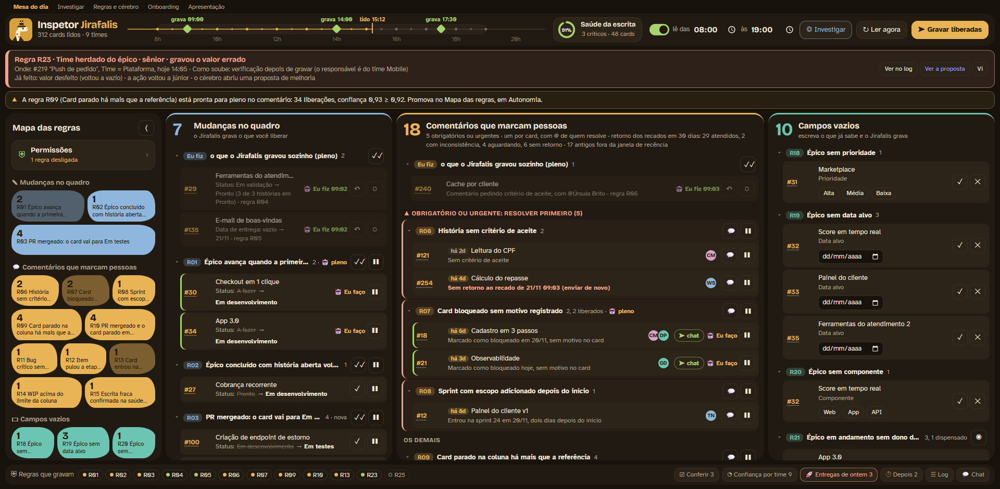
Tela · A tarja vermelhaPrevenção é invisível; dano é visível.5Escrita segura
Travas que valem para toda escrita, em qualquer nível. Vêm do núcleo já construído e em uso.
6Regras: a fonte do trabalho
Tudo o que o Jirafalis faz no dia a dia vem de uma regra. Uma regra é um padrão do produto preenchido com os termos da atmosfera do cliente. O motor executa de forma determinística: mesma entrada, mesma saída.
Os 14 padrões
| Padrão | O que faz | Exemplo |
|---|---|---|
| PR-01 Pai avança com o filho | Pai em estado inicial passa a em andamento quando um filho começa | Épico vai para Em desenvolvimento com a 1ª história |
| PR-02 Pai fecha com os filhos | Pai conclui quando todos os filhos atingem um conjunto de estados | Épico em Pronto quando todas as histórias estão em Pronto |
| PR-03 Pai reabre com filho aberto | Pai concluído volta quando há filho que não terminou | Épico reaberto por uma história nova |
| PR-04 Estado da janela | Item com data D fica no estado E durante uma janela | 30 dias em acompanhamento depois da entrega |
| PR-05 Transição em data | No dia da data, a partir de uma hora, move o item | Vai para Pronto na data de entrega, às 9h |
| PR-06 Transição com evidência | Só move se a evidência (anexo ou campo) atende critérios | Só fecha com o link do deploy |
| PR-07 Herança de campo | Filho vazio recebe o valor do pai | História herda o time do épico |
| PR-08 Inferência de valor | Preenche campo vazio por inferência | Data de entrega = dia em que entrou em Pronto |
| PR-09 De-para declarado | Troca um valor antigo por um novo | Componente "App antigo" → "Mobile" |
| PR-10 Cadastro mínimo | Campo vazio, curto ou inválido gera alerta ou pedido | Sem critério de aceite ao entrar em desenvolvimento |
| PR-11 Saúde do fluxo | Parado há N dias, etapa pulada, pai e filho incoerentes; cruza com o git | PR mergeado e card parado há 3 dias |
| PR-12 Vínculo entre espaços | Item precisa estar ligado a um item de outro espaço | Bug ligado à ocorrência do suporte em 7 dias |
| PR-13 Relatório e aviso agendado | Resumo ou aviso para um canal, num horário | Resumo da semana no chat do gestor, sexta 17h |
| PR-14 Confiança por time | Nota de confiabilidade do dado por time | Quanto do quadro do time Dados reflete o real |
O que uma regra pode fazer (tipos de ação e risco)
| Classe | Ações | Desfaz? | Quem vê |
|---|---|---|---|
| R0 · leitura | Alerta no painel, relatório interno, checagem de dado | Não escreve | Só o gestor |
| R1 · campo silencioso | Preencher campo obrigatório, herança, de-para, inferência | Sim | Quase ninguém |
| R2 · fluxo visível | Mudar status, comentar no item, pedir preenchimento | Sim, com rastro | O time, no item |
| R3 · mensagem a pessoas | Aviso no chat do time (Slack, Teams), pergunta ao dev, menção | Não | Pessoas, fora da ferramenta |
Uma mesma regra pode ter várias ações. "Cadastro mínimo" pode alertar no painel (R0), comentar pedindo o campo (R2) e avisar no chat (R3). Cada ação tem o próprio nível de autonomia.
Famílias de código
Cada regra do cliente fictício tem um código curto e sequencial (R01, R02…), na ordem em que aparece na mesa. É o código que aparece nas raias, nas manchas, nas permissões, no rodapé e no log. O catálogo do protótipo é ilustrativo: são regras comuns de Scrum e Kanban (card parado, WIP acima do limite, história sem critério de aceite, bug crítico sem responsável), escolhidas só para mostrar o funcionamento.
A ficha da regra
Cada regra tem uma ficha no painel: a frase em português, o padrão e os parâmetros, as versões (com quem mudou e por quê), as exceções (com motivo e data), as ações com a confiança de cada uma, a origem do nível e o plano de promoção. Botões: simular agora, editar (nova versão), suspender, "nunca sênior", "já confio".
7Cérebro das regras e senioridade
Um cérebro por trás das regras verifica tudo: o que as regras fizeram, o que o gestor decidiu e como o mundo reagiu depois. A confiança é sempre conquistada e sempre vigiada.
A unidade de confiança
O nível não é da regra inteira, é de cada (regra · versão) × tipo de ação × escopo (time). Uma regra pode ser sênior no comentário e ainda pleno na mensagem; sênior no time em que o processo é estável e pleno onde ainda não é.
Como a confiança é medida
| Classe | Júnior → pleno | Equivale a, sem erro | Pleno → sênior |
|---|---|---|---|
| R0 leitura | nasce sênior | — | — |
| R1 campo silencioso | ≥ 0,85 | ~16 liberações | 5 dias úteis em pleno |
| R2 fluxo visível | ≥ 0,92 | ~32 liberações | 10 dias úteis |
| R3 mensagem a pessoas | ≥ 0,95 no ensaio | ~52 rascunhos aprovados | 15 dias úteis |
Promoção por tempo, com portões
Pleno vira sênior sozinho quando o tempo de prova termina e todos os portões estão abertos: zero desfeitas e zero erros; versão estável; nenhuma deriva de configuração ou de dados; nenhuma proposta de melhoria pendente; evidência variada. O gestor pode travar ("nunca sênior") ou adiantar ("já confio").
Nascer sênior
Por retrospecto forte (≥ 99% de concordância com o que as pessoas fizeram nos últimos 90 dias), por padrão comprovado (o mesmo padrão já é sênior em outro espaço) ou por decisão do gestor, com vigilância reforçada por 2 semanas. Mensagem a pessoas só nasce sênior por decisão.
O analista de melhorias
Procura reprovações concentradas, edições repetidas, reversões na ferramenta, alertas que nunca geram ação, deriva e momento errado. Uma proposta só chega ao gestor se passar por todos os critérios:
Aprovada, a versão nova herda o nível da anterior depois de uma estreia curta, porque o replay provou que nada do que funcionava quebrou. Cada decisão do gestor vira um caso de teste das versões futuras.
O guardião
Sentinelas em cada execução: verificação antes e depois de gravar, reversão pelo mundo, deriva de configuração e de dados, volume anômalo, laço e conflito, falha de canal. Cada unidade tem um disjuntor: quando uma sentinela dispara, a ação para ou desce de nível na hora. Risco percebido sem dano rebaixa em silêncio. Erro com efeito volta a júnior e aparece como tarja vermelha no topo do painel: o quê, onde, quando e o que o sistema já fez.
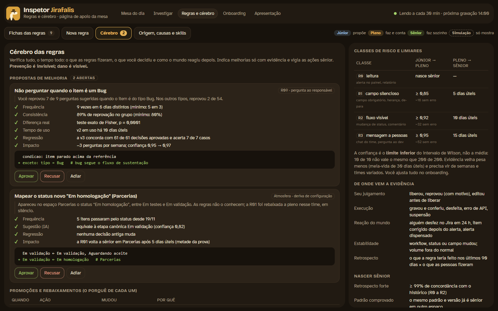
Tela · Cérebro das regrasPropostas de melhoria com os critérios e o replay, promoções e rebaixamentos com o porquê, sentinelas e um exemplo de tarja vermelha.Onde entra IA no cérebro: agrupar motivos escritos livremente, redigir a proposta em português, sugerir o mapeamento de um status novo, resumir o log. Onde não entra: calcular a confiança, promover e rebaixar, executar a regra, o replay e as verificações. O cérebro aprende com estatística explicável e decide com regra fixa.
8Investigar
Quando o gestor quer olhar a fundo onde as coisas estão travando. Entra pelo botão Investigar no topo da mesa, ou clicando no número de qualquer card numa raia, que abre o caso dele.
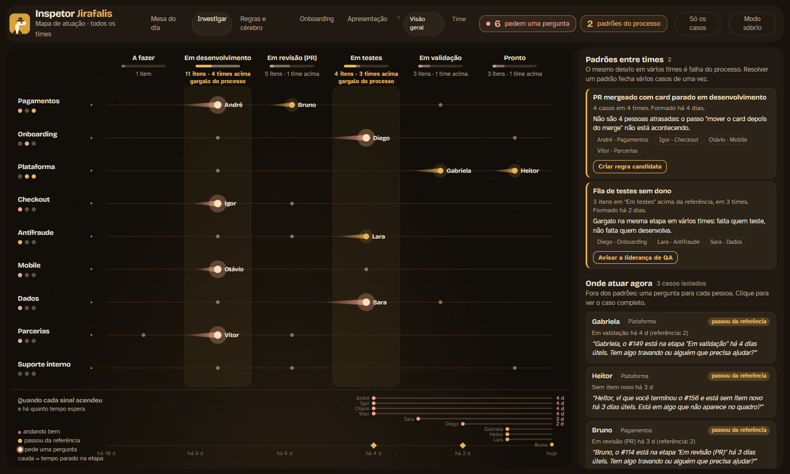
Visão geral · todos os timesSó brilha o que pede ação; a cauda é o tempo parado. Padrão entre times (o mesmo desvio em vários times) é falha do processo e vira regra candidata com um clique.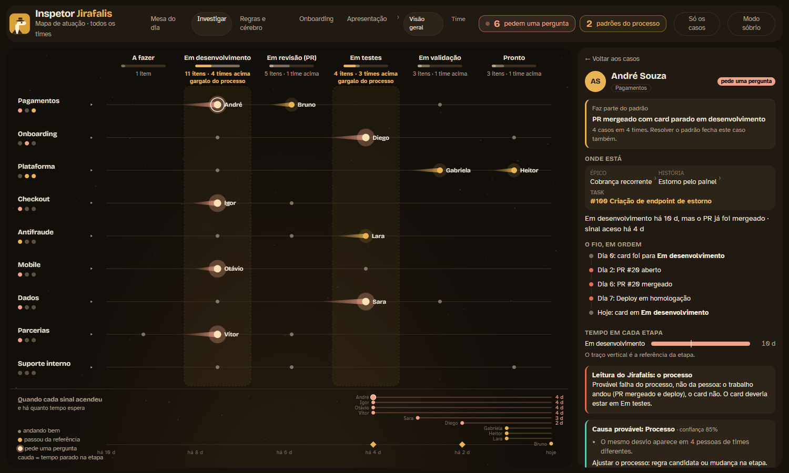
O casoÉpico › história › task, o fio das evidências (card, PR, deploy), tempo em cada etapa × referência, a leitura do Jirafalis, a pergunta sugerida e o registro da resposta ("o processo falhou" ensina o sistema).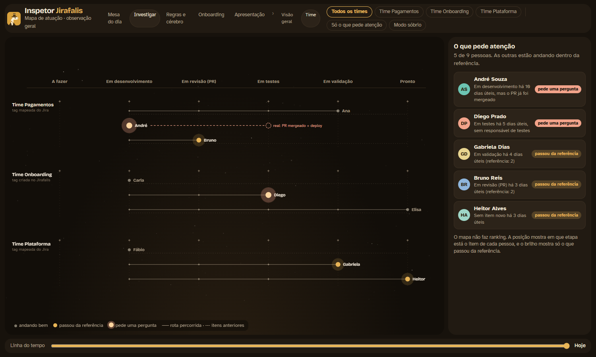
O timeA jornada de cada pessoa como rota entre as etapas; linha do tempo; o fio real quando o card diverge do git.O Investigar e a mesa se alimentam: um padrão entre times vira regra (como a 16, "PR mergeado: o card vai para Em testes"); a resposta do gestor a um caso vira evidência para o cérebro; as regras de andamento acendem os pontos do mapa.
9Ligar o Jirafalis na IA
O Jirafalis é um servidor MCP remoto (Model Context Protocol, o padrão aberto que as IAs usam para falar com ferramentas). Ele entra na IA do gestor como um conector, ao lado dos conectores que o gestor já tem: Jira, GitHub, Slack.
A conta
A conta pode nascer em dois lugares: no painel web ou ao ligar o conector. O conector pede login (OAuth do Jirafalis) e, se a pessoa não tem conta, a leva para a criação. O Jirafalis nunca vê nem guarda o token do Claude. O que roda sem o gestor por perto (leituras e gravações agendadas) usa a chave de API do próprio cliente.
Onde ele conversa não importa para configurar; importa para gravar
| Onde o gestor está | Configurar (onboarding, regras, plano) | Gravar na ferramenta |
|---|---|---|
| Claude Code (plugin) | Sim | Sim, com o hook de trava |
| claude.ai (conector) | Sim | Não pelo chat: a execução vai para o servidor do Jirafalis |
| Painel web | Sim | Sim, pela API, com todas as travas |
Regra de produto: a conversa nunca é canal de escrita sem trava. Onde não há como travar, ela só configura.
O contrato do conector
Comandos que aparecem para o gestor na IA: começar onboarding, revisar meu processo, nova regra, ver regras candidatas, plano de promoção, o que o Jirafalis fez.
| Ferramenta do conector | Entra | Sai |
|---|---|---|
iniciar_onboarding | espaços escolhidos | roteiro de leitura, com consultas prontas |
registrar_descoberta | metadados lidos pelo Claude | atmosfera v0 + perguntas pendentes |
responder_pergunta | resposta do gestor | atmosfera atualizada + próxima pergunta |
confirmar_atmosfera | ok do gestor | atmosfera v1, versionada, com link do painel |
listar_regras_candidatas | — | padrões achados no histórico, com evidência |
propor_regra | texto do gestor em português | rascunho (padrão + parâmetros) + dúvidas |
pedir_amostra · registrar_amostra | rascunho · itens lidos | consulta a rodar · resultado da simulação |
salvar_regra | rascunho aprovado | versão no painel (Simulação, júnior) |
definir_plano_promocao | limiares e regras em que já confia | plano registrado |
consultar_log | pergunta ("o que fez no time Mobile?") | trechos do log para a IA resumir |
O que passa e o que fica
Proteção contra instrução escondida no texto de um card: o conector só aceita dados no formato esperado, e a escrita só passa pelo plano aprovado.
10O onboarding completo
O que levaria semanas de reuniões, planilhas e revisão regra a regra, numa sessão de conversa: meta de até 30 minutos e no máximo 10 perguntas.
começar onboarding. O Jirafalis devolve o roteiro de leitura.A atmosfera do processo
O Jirafalis não traz processo de empresa nenhum. Traz funções puras (ler, avaliar, simular, escrever com travas, avisar, aprender autonomia) e padrões de regra com parâmetros. O processo de cada empresa entra como configuração, versionada:
Se a ferramenta mudar depois (um status novo, um campo renomeado), uma sentinela percebe, pausa as ações afetadas e propõe atualizar a atmosfera. É assim que o Jirafalis é agnóstico: Jira, Azure DevOps, monday, Asana, Linear.
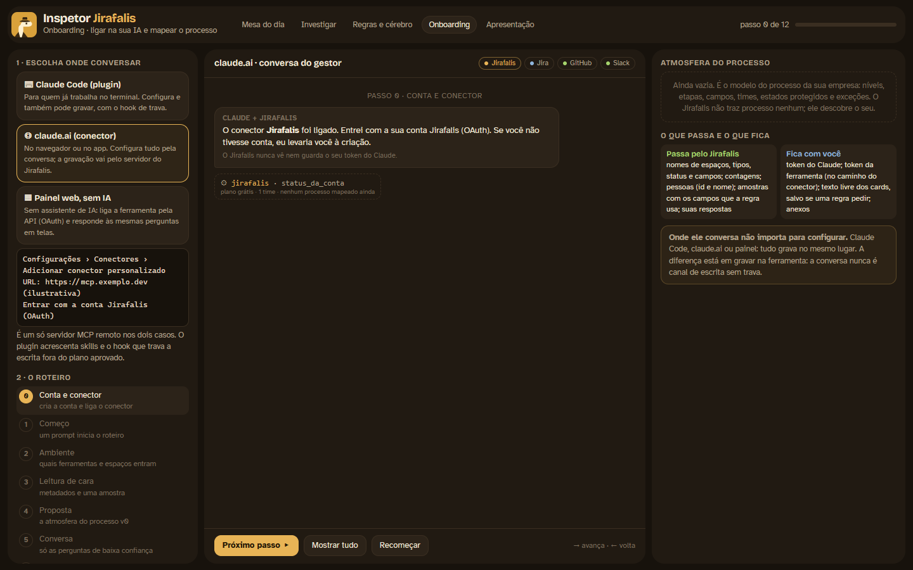
Tela · OnboardingÀ esquerda, onde conversar e o roteiro; no centro, a conversa com as chamadas ao conector; à direita, a atmosfera do processo sendo montada. Troque o caminho para ver o mesmo onboarding sem IA.11Criar regras, com e sem o Claude
Dois caminhos, o mesmo resultado, no mesmo lugar. A IA escreve a regra; quem executa é o motor determinístico.
- 1 · Padrão: escolhe um dos 14.
- 2 · Parâmetros: as opções vêm da atmosfera (só aparecem etapas, campos e times que existem).
- 3 · Conferir: a frase em português e a regra que o motor executa, lado a lado.
- 4 · Validar: a etapa e o campo existem? a transição é permitida? briga com outra regra? toca estado protegido?
- 5 · Simular: "hoje pegaria N itens", com a lista.
- 6 · Salvar: Simulação, júnior.
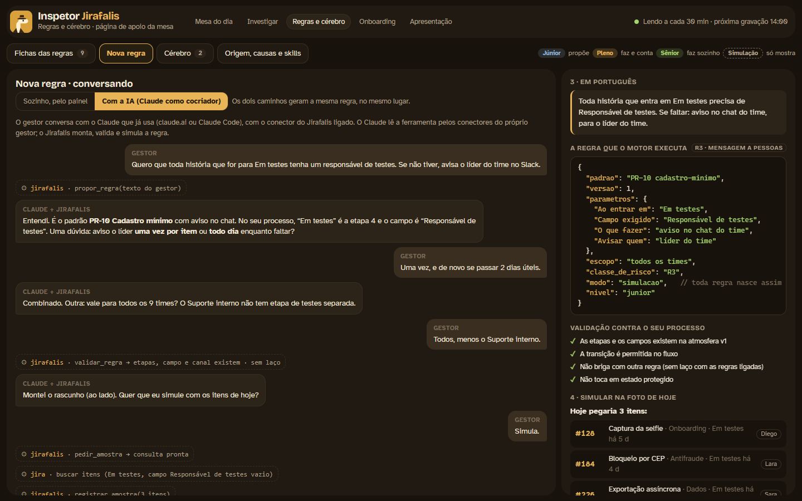
Tela · Nova regraAlterne entre "sozinho, pelo painel" e "com a IA". No painel, mude o padrão e os parâmetros e veja a simulação recalcular.12Origem das mudanças e feedback para as skills
Se a skill de IA é o novo processo, um erro de processo é um bug na skill.
Quem fez cada mudança
Pelo conector, o agente escreve com a conta da pessoa. Um cérebro de padrões junta três famílias de sinais para dizer, com confiança, se a mudança foi de humano, IA provável, IA confirmada, automação ou do próprio Jirafalis:
Princípios: compara a pessoa com ela mesma; precisão antes de cobertura (na dúvida, "indefinido"); cada ação com marcador é um exemplo rotulado que ensina o cérebro.
O ciclo de feedback
O feedback também segue a escada: júnior gera a proposta e uma pessoa abre o PR; pleno abre o PR em rascunho; sênior abre o PR pronto para revisão. O merge é sempre humano. O catálogo × uso mostra skill sem uso, skill que mais erra e skill que mais evita cobrança.
13Princípios
14Arquitetura
| Peça | Papel | Nunca faz |
|---|---|---|
| IA do gestor (Claude) | Conversa, lê a ferramenta pelos conectores do gestor, leva os dados ao Jirafalis, traz as perguntas | Decidir a regra ou gravar fora do plano aprovado |
| Conector do Jirafalis | Guia a conversa, recebe a descoberta, devolve perguntas, valida e simula regras | Ler a ferramenta do gestor diretamente (no caminho do conector) |
| Núcleo | Monta e versiona a atmosfera, executa regras, mede confiança, guarda o log | Usar o token do Claude; deixar a IA decidir o que grava |
| Painel web | Mostra, edita, aprova, audita | — |
Tudo é versionado (regra, atmosfera, modelo de mensagem) e cada linha do log aponta para a versão que a produziu. A confiança, os níveis e as propostas são recalculáveis a partir do log.
15Estado e próximos passos
| Parte | Estado |
|---|---|
| Núcleo: motor de regras com simulação, estreia, lote, releitura, desfazer, pausa, trilha de auditoria; autonomia júnior → pleno; painel com Liberar e agenda; avisos em chat | Construído e validado pelo autor em operação real |
| Interface da versão agnóstica: mesa do dia, Investigar, onboarding, regras e cérebro | Protótipo navegável (este repositório), com dados fictícios |
| Onboarding pelo conector e criação de regra por conversa | Desenho e contrato definidos; próximo a construir |
| Cérebro: unidade por ação, sentinelas, avaliador, promotor, replay, analista | Desenho completo; construção nessa ordem |
| Origem e skills | Desenho; validação técnica do rastro de MCP feita |
Ordem de construção
Hipóteses a validar
Pelo conector dá para descobrir 80% da atmosfera sem perguntar · o gestor fecha o onboarding em até 30 minutos e 10 perguntas · a frase do gestor vira padrão e parâmetros corretos · a simulação "pegaria hoje" é o que dá confiança para aprovar · o retrospecto prevê o acerto em pleno · as sentinelas pegam o problema antes de virar tarja.
Todas as telas do protótipo
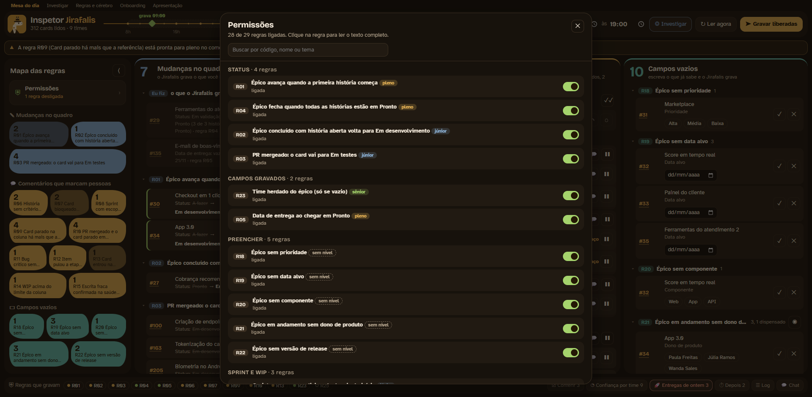
PermissõesTodas as regras por tema, liga e desliga, nível OnboardingLigar na IA e mapear o processo, em 12 passos Nova regraCom o Claude ou pelo formulário CérebroMelhorias, promoções, sentinelas, tarja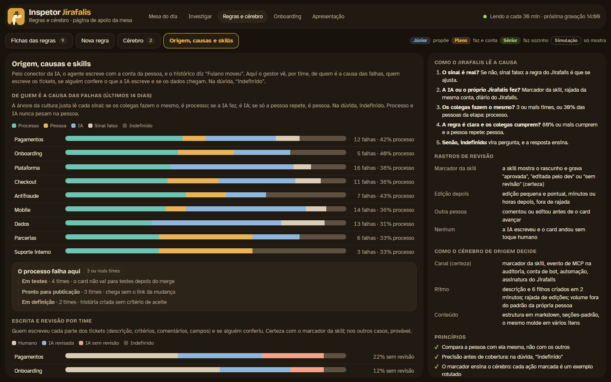
Origem, causas e skillsDe quem é a falha, quem escreve e se alguém revisa, e o erro de volta para a skill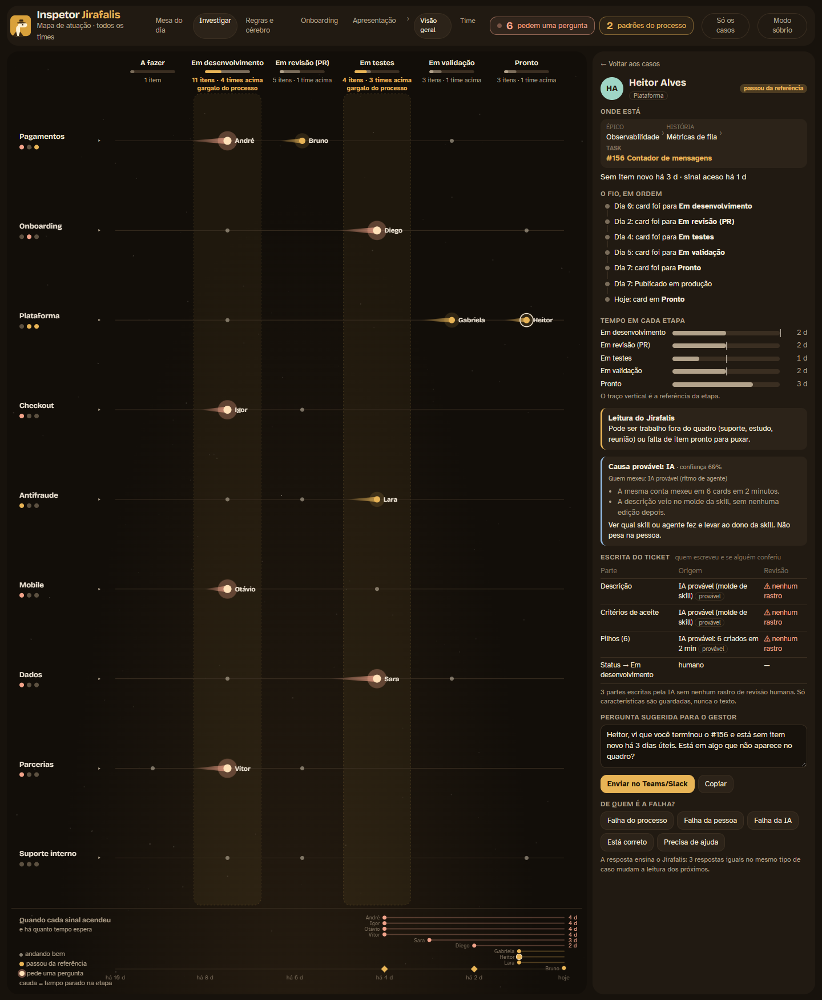
O caso: causa e escritaCausa provável, escrita do ticket com revisão e os 5 botões de resposta InvestigarTodos os times, o time e o caso